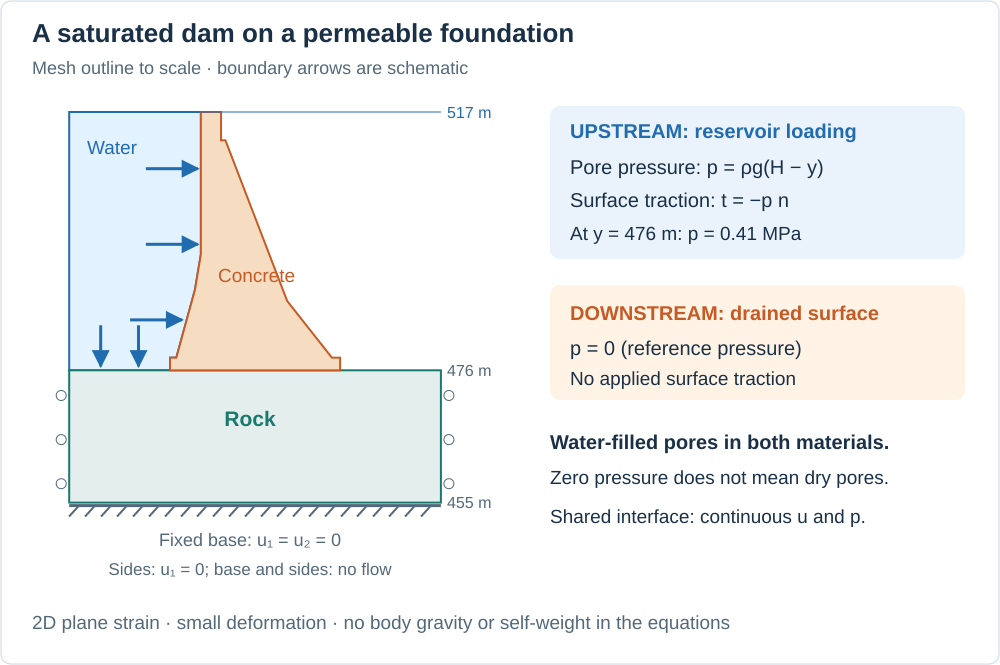
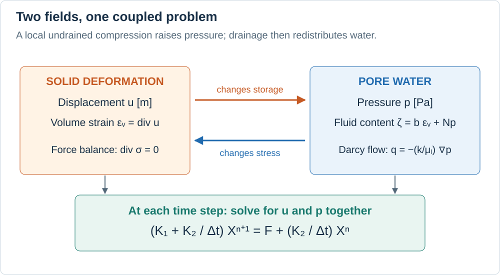

Biot consolidation: water and deformation in a dam
Imagine squeezing a water-filled sponge. Its solid skeleton deforms, the water pressure changes, and water flows if it can escape. Concrete and rock behave much more stiffly, but the same interaction is the subject of Biot poroelasticity. Here we apply it to a two-dimensional section of the Ternay dam and its foundation when a reservoir load is applied suddenly.
This tutorial assumes basic calculus, matrix algebra, and Hooke's law. We will connect the physical picture to conservation equations, then follow their finite element implementation with PoroMechanics and Ferrite. It is an illustrative linear model, not a complete assessment of the real dam's safety.
1. What are we calculating?
There are three scalar unknowns at each mesh node:
| Unknown | Meaning | Unit |
|---|---|---|
| $u_1$ | Horizontal displacement; positive to the right | m |
| $u_2$ | Vertical displacement; positive upward | m |
| $p$ | Liquid pore pressure relative to the reference pressure | Pa |
The displacement vector is $\mathbf u=(u_1,u_2)$. Pressure acts inside the pores; it is distinct from the external water force on the upstream surface. The model accounts for both effects.
The pores stay saturated throughout the calculation. A pressure of zero means the reference pressure, not the absence of water. In particular, this example does not simulate a wetting front entering an initially dry dam. Unlike the drying tutorial, it has neither a gas phase nor temperature as an unknown.
Geometry and boundary conditions

The outline follows the supplied mesh. Arrows illustrate boundary conditions, not computed displacements or velocities; the reservoir is outside the mesh.
The file ternay.msh contains 479 nodes and 860 triangular cells, with two material regions: concrete (physical surface "1") and rock ("2"). Coordinates are in meters. The water surface is at elevation $H=517$ m and the dam-foundation interface is at $y=476$ m. The reservoir imposes
\[p_{\mathrm{hydro}}(y)=(\rho_l g)(H-y).\]
Using $\rho_l g=10\,000$ Pa/m, the upstream pressure increases from zero at the water surface to $410\,000$ Pa, or $0.41$ MPa, at the interface. The outward unit normal is $\mathbf n$: therefore an inward water force has traction $\mathbf t=-p_{\mathrm{hydro}}\mathbf n$. Traction is force per unit area.
| Mesh tags | Hydraulic condition | Mechanical condition |
|---|---|---|
101–105, 121: upstream | $p=p_{\mathrm{hydro}}$ | $\boldsymbol\sigma\mathbf n=-p_{\mathrm{hydro}}\mathbf n$ |
106–112, 125: downstream | $p=0$ (drained boundary) | Zero applied traction |
122, 124: foundation sides | Zero normal flow | $u_1=0$; vertical sliding is allowed |
123: foundation base | Zero normal flow | $u_1=u_2=0$ |
A prescribed value is a Dirichlet condition. Zero flow and zero traction on otherwise unconstrained boundaries are natural conditions of the weak form introduced below. A shared mesh joins concrete and rock: displacement and pressure are continuous across their interface, while the assembly enforces force and flux balance in the weak sense. No contact opening or interface leakage law is added.
Assumptions and initial state
We assume small strains, isotropic linear elasticity, saturated pores, constant material coefficients, and slow enough loading to neglect inertia. The section is in plane strain: out-of-plane strain is zero, not out-of-plane stress. All integrals represent a section with unit thickness perpendicular to the drawing. Cracking, plasticity, temperature changes, and dam self-weight are omitted.
Gravity is omitted from the bulk mechanical and Darcy equations. It appears only through the prescribed reservoir pressure. This distinction matters: the interior flow law below is driven by pressure gradients, not by a full hydraulic-head gradient including elevation. Do not interpret this example as a complete self-weight and gravitational seepage calculation.
The code starts with zero displacement and zero pressure at unconstrained nodes, and immediately imposes the upstream pressure at the boundary. It then applies the reservoir traction for the first time step. This represents a sudden load increment on an idealized reference state. The initial zero displacement is not an equilibrium solution under the newly applied traction; equilibrium is enforced at the first solved step.
2. From the physical picture to the equations

Compression can raise pore pressure; pressure changes the stress carried by the solid skeleton. Flow gradually redistributes the water. Both unknowns are solved together at every step.
Small strain and force balance
Displacement is a movement; strain measures how that movement varies in space:
\[\boldsymbol\varepsilon(\mathbf u) =\tfrac12\left(\nabla\mathbf u+(\nabla\mathbf u)^\mathsf T\right), \qquad \varepsilon_v=\operatorname{tr}\boldsymbol\varepsilon =\nabla\cdot\mathbf u.\]
Strain is dimensionless. For example, a bar lengthening by 1 mm over 1 m has axial strain $10^{-3}$. Positive volumetric strain $\varepsilon_v$ denotes expansion; negative volumetric strain denotes compression.
With tension taken as positive, the total stress is
\[\boldsymbol\sigma =\underbrace{\lambda\varepsilon_v\mathbf I+2\mu\boldsymbol\varepsilon}_{\text{elastic stress of the skeleton}} -\underbrace{b p\mathbf I}_{\text{pore-pressure contribution}}, \qquad \nabla\cdot\boldsymbol\sigma=\mathbf0.\]
Here $\mathbf I$ is the identity tensor and $b$ is the dimensionless Biot coefficient. The minus sign makes positive pore pressure contribute compressive stress. At fixed total load, changing $p$ changes the load supported by the skeleton, so the displacement changes too. The Lamé constants are calculated from Young's modulus $E$ and Poisson's ratio $\nu$:
\[\lambda=\frac{E\nu}{(1+\nu)(1-2\nu)},\qquad \mu=\frac{E}{2(1+\nu)}.\]
Do not confuse the shear modulus $\mu$ [Pa] with liquid viscosity $\mu_l$ [Pa·s]. Under plane strain, $\varepsilon_{33}=0$ but $\sigma_{33}=\lambda(\varepsilon_{11}+\varepsilon_{22})-bp$ generally is not zero.
Water storage and Darcy flow
Let $\zeta$ denote the change in fluid content: the additional fluid mass, divided by the reference liquid density and the reference bulk volume. It is dimensionless: an equivalent fluid volume per initial bulk volume. Linear poroelasticity writes, with pressure measured from the reference state,
\[\zeta=b\varepsilon_v+Np,\qquad \mathbf q=-\frac{k_{\mathrm{int}}}{\mu_l}\nabla p.\]
The first term describes storage associated with deformation. The second describes pressure-dependent storage at fixed strain. $N$ is a storage coefficient, in Pa⁻¹; it is the inverse of the Biot modulus often denoted $M$ in other texts. $\mathbf q$ is the Darcy volume flux relative to the solid skeleton [m/s], not the velocity of an individual water molecule or the mass flux. Intrinsic permeability $k_{\mathrm{int}}$ [m²] measures how easily the pore network transmits water.
As a sign check, consider a locally undrained compression: no water leaves, so $d\zeta=0$. Then $dp=-(b/N)d\varepsilon_v$. A negative strain increment raises pressure. This simple calculation explains the coupling without assuming that every point in this dam follows an undrained path.
Conservation means “rate of accumulation + net outflow = zero”:
\[\underbrace{\frac{\partial}{\partial t} \left(b\nabla\cdot\mathbf u+Np\right)}_{\text{storage rate}} -\underbrace{\nabla\cdot\left(\frac{k_{\mathrm{int}}}{\mu_l}\nabla p\right)}_{\text{minus divergence of pressure-driven transport}} =0.\]
Both terms have units s⁻¹. This is the constant-reference-density fluid mass balance written in terms of fluid content. Together with force balance, it supplies three scalar equations for $u_1$, $u_2$, and $p$.
Does the volume in the conservation law change?
Yes: the material deforms, but it is water mass that is conserved. Imagine a small piece of the dam whose boundary follows the solid skeleton. Call its current domain $V(t)$. Its volume can change, and water can cross its moving boundary. Without a fluid source, the exact integral balance is
\[\frac{d}{dt}\int_{V(t)}\phi\rho_l\,dV =-\int_{\partial V(t)}\rho_l\mathbf q\cdot\mathbf n\,dS, \qquad \mathbf q=\phi(\mathbf v_l-\mathbf v_s).\]
Here $\phi$ is the current porosity, $\rho_l$ the current liquid density, and $\mathbf v_l$ and $\mathbf v_s$ the liquid and solid velocities. The integral on the left is the water mass inside the deforming piece; the one on the right is its outward mass flow rate. The derivative includes the motion of the domain, not just a change in $\phi\rho_l$ at fixed coordinates. A boundary moving with the solid does not necessarily move with the water, which is why the flux uses the relative velocity.
To express this balance on an unchanged reference domain $V_0$, introduce the local volume ratio $J=dV/dV_0$. The water mass per reference bulk volume is $J\phi\rho_l$, and the dimensionless change in fluid content is
\[\zeta=\frac{J\phi\rho_l-\phi_0\rho_{l0}}{\rho_{l0}}.\]
Subscript 0 denotes the reference state, where $J=1$. Dividing by the fixed reference density $\rho_{l0}$ is a choice of units; it does not require the actual liquid to be incompressible. Notice that both changing pore volume and changing liquid density can change the amount of water stored.
In small-strain theory, $J\simeq1+\varepsilon_v$. Linearizing the storage law gives $\zeta=b\varepsilon_v+Np$. Consistently linearizing the balance and flux about the reference state gives
\[b\dot\varepsilon_v+N\dot p+\nabla\cdot\mathbf q=0.\]
Dots denote time derivatives following the reference material points. Thus the fixed mesh used by this example does not assume a constant physical volume: its first-order effect is retained through $b\dot\varepsilon_v$. At finite deformation, one would need the full volume ratio and transformations of areas and fluxes between current and reference configurations. Those geometric effects are outside this linear example.
Must the material be free to deform?
No. The mass balance holds whether displacement is allowed or constrained. Small deformation, rather than unrestricted deformation, is the assumption behind its linear form. Mechanical conditions determine which strain occurs; hydraulic conditions determine how water can enter or leave.
| Situation | Consequence for the local balance | Interpretation |
|---|---|---|
| Locally fixed volume: $\dot\varepsilon_v=0$ | $N\dot p+\nabla\cdot\mathbf q=0$ | Pressure-dependent storage remains even without bulk-volume change. |
| Locally undrained compression: $d\zeta=0$ | $dp=-(b/N)d\varepsilon_v$ | Water mass stays constant while compression raises pressure. |
For the first case, compressibility allows fluid exchange to change pressure even though the bulk volume is fixed. For the second, imagine a sealed, uniformly compressed small specimen. Sealing the exterior of a large heterogeneous domain fixes its total water mass but does not prevent internal redistribution: it does not by itself imply $d\zeta=0$ at every point.
Our dam already has mechanical constraints: the foundation base is fixed and its sides cannot move horizontally. These conditions do not set volumetric strain to zero everywhere. Likewise, a drained boundary does not imply a mechanically free boundary. Keep the two types of conditions separate when interpreting the model.
Parameters and a useful time-scale estimate
| Symbol | Concrete | Rock | Unit | Meaning |
|---|---|---|---|---|
| $E$ | $1.4\times10^{10}$ | $1.8\times10^{10}$ | Pa | Elastic stiffness |
| $\nu$ | 0.15 | 0.15 | — | Lateral strain response |
| $k_{\mathrm{int}}$ | $10^{-14}$ | $10^{-11}$ | m² | Intrinsic permeability |
| $b$ | 0.4 | 0.2 | — | Pressure–deformation coupling |
| $N$ | $10^{-10}$ | $10^{-10}$ | Pa⁻¹ | Storage coefficient at fixed strain |
| $\mu_l$ | $10^{-3}$ | $10^{-3}$ | Pa·s | Liquid viscosity |
The coefficient of consolidation $c_v$ is not the effective storage. To see the distinction, consider a separate, homogeneous one-dimensional column, with deformation along $y$, lateral strains held at zero, and axial total stress held constant after a load increment. Its axial strain is its volumetric strain, and the axial constitutive equation gives
\[\sigma_{yy}=(\lambda+2\mu)\varepsilon_v-bp, \qquad \dot\sigma_{yy}=0 \quad\Longrightarrow\quad \dot\varepsilon_v=\frac{b}{\lambda+2\mu}\dot p.\]
The column is laterally constrained but can shorten in the axial direction. Substituting this relation into the water balance, with constant coefficients, yields a pressure diffusion equation:
\[\underbrace{\left(N+\frac{b^2}{\lambda+2\mu}\right)}_{S_{\mathrm{eff}}} \frac{\partial p}{\partial t} =\frac{k_{\mathrm{int}}}{\mu_l}\frac{\partial^2p}{\partial y^2}, \qquad \frac{\partial p}{\partial t}=c_v\frac{\partial^2p}{\partial y^2}.\]
\[S_{\mathrm{eff}}=N+\frac{b^2}{\lambda+2\mu}, \qquad c_v=\frac{k_{\mathrm{int}}/\mu_l}{S_{\mathrm{eff}}}.\]
| Quantity | Unit | Physical role |
|---|---|---|
| $N$ | Pa⁻¹ | Storage response to pressure at fixed strain |
| $S_{\mathrm{eff}}$ | Pa⁻¹ | Storage response including the strain allowed by this column's mechanical conditions |
| $c_v$ | m²/s | Diffusivity governing the redistribution of pressure |
The extra term $b^2/(\lambda+2\mu)$ is the mechanical contribution to effective storage. It follows from the stated column constraints; it is not a universal replacement for $N$ under any mechanical boundary conditions. The dam solver retains displacement and pressure as coupled unknowns and does not substitute this scalar estimate for their equations.
Consolidation connects this diffusion to deformation. A rapid compressive load on a saturated specimen can first raise pore pressure. As water drains, the excess pressure dissipates, the skeleton carries more of the fixed total load, and the specimen progressively compresses. This delayed deformation associated with drainage is consolidation. Larger permeability speeds up the process; larger effective storage slows it down for a given permeability and viscosity.
Balancing the time and space derivatives in the diffusion equation gives the characteristic time for a drainage length $L$:
\[t_c\sim\frac{L^2}{c_v}.\]
This is a time-scale estimate, not an exact time to complete consolidation; numerical factors depend on the boundary conditions and chosen degree of consolidation. Dissipation refers to excess pressure relative to the eventual steady state, whose pressure need not be zero. In the dam example, hydraulic boundary loading also acts alongside the mechanical reservoir force.
The material values here give $c_v\approx0.0903$ m²/s for concrete and $97.9$ m²/s for rock. For an illustrative drainage length $L=10$ m, the corresponding times are about 1,108 s (18.5 min) and 1.02 s. Doubling $L$ multiplies the estimate by four. These estimates explain why rock responds faster; they are not an analytical solution or a completion time for this heterogeneous two-dimensional dam.
The default simulation lasts $20\times100=2\,000$ s, or 33.3 min. A 100 s step cannot resolve a process occurring in approximately one second. Implicit integration can remain stable with that step while missing the fast initial rock response.
3. How to run the example
From the repository root, prepare the examples environment once:
julia --project=examples -e 'using Pkg; Pkg.develop(path="."); Pkg.instantiate()'
julia --project=examples examples/biot_consolidation/run.jlUse Julia 1.12 or newer. The script needs Ferrite, FerriteGmsh, and the supplied ternay.msh; run it in the examples environment, which declares these dependencies. The mesh path is relative to this script, so it does not depend on the working directory. The documentation displays this example without executing it during its build; run the command above to perform the calculation yourself.
PoroMechanics supplies the model interface. This example implements the finite element callbacks element_matrices! and facet_load!; Ferrite manages shape functions, quadrature, degrees of freedom, constraints, and assembly. There is no VoronoiFVM flux! or nonlinear Newton iteration in this linear example.
using PoroMechanics
using Ferrite
using FerriteGmsh
using LinearAlgebra
using SparseArrays
using Printf4. Define the model and the result
BiotModel <: AbstractPoroModel groups the material data and reservoir loading. The suffix _b refers to concrete (béton); _r refers to rock. The FEM field :u has two components and :p has one. nspecies and species_names describe these three scalar components in the PoroMechanics interface.
The load uses rho_g directly. The rho_l field documents the density but is not used separately in the assembly: changing rho_l alone does not change the load. If you change the fluid, keep viscosity and the product rho_g consistent.
BiotSolution holds the final solution vector and its DofHandler. The latter is the map between physical fields, mesh nodes, and positions in the vector; guessing that all pressures occupy the last third of the vector is unsafe.
"""Parameters of model M7 (Biot poroelasticity, saturated medium)."""
Base.@kwdef struct BiotModel <: AbstractPoroModel
# concrete (surface "1")
E_b :: Float64 = 1.4e10 # Young's modulus [Pa]
nu_b :: Float64 = 0.15 # Poisson's ratio [-]
k_b :: Float64 = 1.0e-14 # intrinsic permeability [m²]
b_b :: Float64 = 0.4 # Biot coefficient [-]
N_b :: Float64 = 1.0e-10 # storage coefficient [Pa⁻¹]
# rock (surface "2")
E_r :: Float64 = 1.8e10
nu_r :: Float64 = 0.15
k_r :: Float64 = 1.0e-11
b_r :: Float64 = 0.2
N_r :: Float64 = 1.0e-10
# fluid (common)
mu_l :: Float64 = 1.0e-3 # dynamic viscosity [Pa·s]
rho_l :: Float64 = 1000.0 # density [kg/m³]
# hydraulic datum: p_l(y) = ρ_l·g·(H−y)
H :: Float64 = 517.0 # water table elevation [m NGF]
rho_g :: Float64 = 10_000.0 # ρ_l·g [Pa/m]
end
PoroMechanics.nspecies(::BiotModel) = 3 # u₁, u₂, p
PoroMechanics.species_names(::BiotModel) = [:u1, :u2, :p]
"""Result of the M7 simulation: solution vector and DofHandler."""
struct BiotSolution
x :: Vector{Float64}
dh :: DofHandler
end
function Base.show(io::IO, r::BiotSolution)
print(io, "BiotSolution: $(length(r.x)) DOFs — reach them through .x and .dh")
end
"Lamé coefficients λ, μ in plane strain from (E, ν)."
function lame_coeffs(E, nu)
λ = E * nu / ((1 + nu) * (1 - 2nu))
μ = E / (2 * (1 + nu))
return λ, μ
end
"Hydrostatic reservoir pressure at elevation y [Pa]."
p_hydro(m::BiotModel, y::Real) = m.rho_g * (m.H - y)5. From differential equations to element matrices
Why use a weak form?
A triangular mesh represents the fields using simple polynomials. Their derivatives need not be smooth across cell boundaries. Multiplying the equations by test functions and integrating by parts reduces the derivative requirements and makes boundary forces and fluxes appear explicitly.
Let $\mathbf v$ be a virtual displacement and $w$ a pressure test function, both zero on the boundaries where their corresponding values are prescribed. With $\kappa=k_{\mathrm{int}}/\mu_l$, the weak equations are
\[\int_\Omega\boldsymbol\varepsilon(\mathbf v):\mathsf C: \boldsymbol\varepsilon(\mathbf u)\,d\Omega -\int_\Omega b(\nabla\cdot\mathbf v)p\,d\Omega =\int_{\Gamma_t}\mathbf v\cdot\mathbf t\,d\Gamma,\]
\[\int_\Omega w\left(b\nabla\cdot\dot{\mathbf u}+N\dot p\right)\,d\Omega +\int_\Omega\kappa\nabla w\cdot\nabla p\,d\Omega=0.\]
A dot means a time derivative; the colon contracts tensor components, as a dot product does for vectors. $\mathsf C$ is the elastic stiffness tensor encoded by $\lambda$ and $\mu$. The pressure boundary term vanishes because $w=0$ on prescribed-pressure faces and normal flux is zero on the remaining faces.
One triangle, nine degrees of freedom
“P1” means a polynomial of degree one: each field varies linearly over a triangle. There are three nodal pressure values and two displacement components at each of three nodes: $3+2\times3=9$ local degrees of freedom. Neighboring cells share nodal values. With 479 nodes, this gives 1,437 global degrees of freedom before constraints are imposed.
Write the vector displacement shape functions as $\mathbf V_i$ and scalar pressure shape functions as $\phi_j$. The four element blocks are
\[\begin{aligned} (K_{uu})_{ij}&=\int_{\Omega_e}\boldsymbol\varepsilon(\mathbf V_i): \mathsf C:\boldsymbol\varepsilon(\mathbf V_j)\,d\Omega,\\ (K_{up})_{ij}&=\int_{\Omega_e}b(\nabla\cdot\mathbf V_i)\phi_j\,d\Omega,\\ (K_{pp})_{ij}&=\int_{\Omega_e}\kappa\nabla\phi_i\cdot\nabla\phi_j\,d\Omega,\\ (M_{pp})_{ij}&=\int_{\Omega_e}N\phi_i\phi_j\,d\Omega. \end{aligned}\]
Their sizes are respectively $6\times6$, $6\times3$, $3\times3$, and $3\times3$. Ferrite evaluates these integrals by quadrature, a weighted sum at points inside each cell. shape_value returns a basis function's value, shape_gradient its spatial gradient, and getdetJdV the geometric integration weight. reinit! updates these quantities for the current cell.
The implementation stores two matrices, with local unknown order $[\mathbf U;P]$:
\[K_1=\begin{bmatrix}K_{uu}&-K_{up}\\0&K_{pp}\end{bmatrix},\qquad K_2=\begin{bmatrix}0&0\\K_{up}^{\mathsf T}&M_{pp}\end{bmatrix}.\]
Thus $K_1 X+K_2\dot X=F$: mechanics has no inertial or time-derivative term, whereas fluid content changes with both displacement and pressure. The opposite coupling signs follow directly from stress and storage; they are not arbitrary. is_beton selects the coefficients for the current material region.
"""
PoroMechanics.element_matrices!(ke1, ke2, is_beton::Bool, m::BiotModel, cv_u, cv_p)
Computes the steady element matrix `ke1` and the storage element matrix `ke2`
for a P1/P1 triangular element of the Biot model.
`is_beton` selects the concrete parameters (`true`) or the rock ones (`false`).
Blocks of ke1 (terms independent of Δt):
ke1[u,u] = K_uu — elastic stiffness
ke1[u,p] = −K_up — mechanical coupling
ke1[p,p] = K_pp — Darcy conductivity
Blocks of ke2 (divided by Δt during time integration):
ke2[p,u] = +K_up^T — hydraulic coupling
ke2[p,p] = M_pp — storage compressibility
"""
function PoroMechanics.element_matrices!(ke1, ke2, is_beton::Bool, m::BiotModel, cv_u, cv_p)
fill!(ke1, 0.0)
fill!(ke2, 0.0)
E = is_beton ? m.E_b : m.E_r
nu = is_beton ? m.nu_b : m.nu_r
k = is_beton ? m.k_b : m.k_r
b = is_beton ? m.b_b : m.b_r
N = is_beton ? m.N_b : m.N_r
λ, μ = lame_coeffs(E, nu)
K_l = k / m.mu_l # hydraulic conductivity [m²/(Pa·s)]
nu_l = getnbasefunctions(cv_u) # 6 (P1 × 2 components)
np_l = getnbasefunctions(cv_p) # 3
for q in 1:getnquadpoints(cv_u)
dΩ = getdetJdV(cv_u, q)
# Mechanical stiffness K_uu : ∫ ε(δu) : C : ε(u) dΩ
for i in 1:nu_l
εᵢ = symmetric(shape_gradient(cv_u, q, i))
for j in 1:nu_l
εⱼ = symmetric(shape_gradient(cv_u, q, j))
σⱼ = λ * tr(εⱼ) * one(εⱼ) + 2μ * εⱼ
ke1[i, j] += (εᵢ ⊡ σⱼ) * dΩ
end
end
# Biot coupling
# ke1[u,p] = −b ∫ (∇·δu) p_j dΩ
# ke2[p,u] = +b ∫ (∇·u_j) δp dΩ
for i in 1:nu_l
div_δu = tr(shape_gradient(cv_u, q, i))
for j in 1:np_l
Np = shape_value(cv_p, q, j)
val = b * div_δu * Np * dΩ
ke1[i, nu_l + j] -= val # K1[u,p]
ke2[nu_l + j, i ] += val # K2[p,u]
end
end
# Darcy K_pp and storage M_pp
for i in 1:np_l
∇Npi = shape_gradient(cv_p, q, i)
Npi = shape_value(cv_p, q, i)
for j in 1:np_l
∇Npj = shape_gradient(cv_p, q, j)
Npj = shape_value(cv_p, q, j)
ke1[nu_l + i, nu_l + j] += K_l * (∇Npi ⋅ ∇Npj) * dΩ # K1[p,p]
ke2[nu_l + i, nu_l + j] += N * Npi * Npj * dΩ # K2[p,p]
end
end
end
end6. Apply the reservoir force
The following callback integrates $\mathbf V_i\cdot\mathbf t$ over an upstream facet (an edge in two dimensions). getnormal supplies the outward normal, and spatial_coordinate supplies the elevation used for hydrostatic pressure. Pressure Dirichlet conditions will be added separately: imposing a pore pressure does not automatically apply a mechanical traction.
"""
PoroMechanics.facet_load!(fe, facet, m::BiotModel, fv_u)
Adds the hydrostatic thrust t = −p_hydro(y)·n on the upstream face.
`fe` contains the six displacement entries associated with the adjacent P1 cell.
"""
function PoroMechanics.facet_load!(fe, facet, m::BiotModel, fv_u)
coords = getcoordinates(facet)
nu_l = getnbasefunctions(fv_u)
for q in 1:getnquadpoints(fv_u)
x = spatial_coordinate(fv_u, q, coords)
n = getnormal(fv_u, q)
dΓ = getdetJdV(fv_u, q)
t = -p_hydro(m, x[2]) * n # inward traction
for i in 1:nu_l
Nu = shape_value(fv_u, q, i)
fe[i] += (Nu ⋅ t) * dΓ
end
end
end7. Assemble and advance in time
The solver first reads the mesh and creates a DofHandler for :u and :p. A ConstraintHandler records prescribed values. Cell contributions are added to global sparse matrices through assemble!, using celldofs to find their positions. The matrices $K_1$ and $K_2$ are assembled once because the material laws and geometry are constant.
Backward Euler replaces $\dot X$ at the new time by $(X^{n+1}-X^n)/\Delta t$. Rearranging gives the actual linear system in the code:
\[\underbrace{\left(K_1+\frac{K_2}{\Delta t}\right)}_{A}X^{n+1} =\underbrace{F+\frac{K_2}{\Delta t}X^n}_{\mathrm{rhs}}.\]
Its second block row is worth reading explicitly:
\[K_{up}^{\mathsf T}\frac{\mathbf U^{n+1}-\mathbf U^n}{\Delta t} +M_{pp}\frac{P^{n+1}-P^n}{\Delta t}+K_{pp}P^{n+1}=0.\]
This is precisely “deformation storage + pressure storage + flow = zero”. apply!(A, rhs, ch) enforces the boundary values; A \ rhs solves the coupled system. There is one linear solve per time step, with no staggered iteration. The current implementation forms A and invokes its factorization at every step. Reusing a factorization for a fixed step and unchanged constraints would be a possible optimization; it is not implemented here.
Backward Euler is first-order accurate in time. Its robustness does not remove the need to check time-step and mesh sensitivity, particularly just after the sudden change in loading.
"""
run_biot(; dt, n_steps, mesh_path)
Simulates the consolidation of the Ternay dam by Biot poroelasticity (M7).
Returns `BiotSolution(x, dh)`: the solution vector at the last step and the DofHandler,
so that results can be post-processed later (extracting p or u per node).
# Keyword arguments
- `dt` : time step [s] (default: 100 s)
- `n_steps` : number of steps (default: 20 → t_max = 2000 s = 33.3 min)
- `mesh_path` : path to `ternay.msh` (default: the script's own directory)
"""
function run_biot(;
dt = 100.0,
n_steps = 20,
mesh_path = joinpath(@__DIR__, "ternay.msh"),
)
m = BiotModel()
# ── Mesh ─────────────────────────────────────────────────────────────────
grid = togrid(mesh_path)
@printf("Mesh: %d nodes, %d elements\n", getnnodes(grid), getncells(grid))
beton_cells = getcellset(grid, "1") # concrete elements
# ── DofHandler : P1 vector (u₁,u₂) + P1 scalar (p) ─────────────────
ip_geo = Lagrange{RefTriangle, 1}()
ip_u = Lagrange{RefTriangle, 1}()^2
ip_p = Lagrange{RefTriangle, 1}()
dh = DofHandler(grid)
add!(dh, :u, ip_u)
add!(dh, :p, ip_p)
close!(dh)
n_loc = ndofs_per_cell(dh)
n_tot = ndofs(dh)
@printf("DOFs: %d total (%d per element)\n", n_tot, n_loc)
# ── Quadrature ───────────────────────────────────────────────────────────
qr = QuadratureRule{RefTriangle}(3)
qr_fac = FacetQuadratureRule{RefTriangle}(2)
cv_u = CellValues(qr, ip_u, ip_geo)
cv_p = CellValues(qr, ip_p, ip_geo)
fv_u = FacetValues(qr_fac, ip_u, ip_geo)
# ── Dirichlet conditions ──────────────────────────────────────────────────
ch = ConstraintHandler(dh)
upstream_tags = ["101","102","103","104","105","121"]
downstream_tags = ["106","107","108","109","110","111","112","125"]
upstream_hyd = reduce(union, getfacetset(grid, r) for r in upstream_tags)
downstream_hyd = reduce(union, getfacetset(grid, r) for r in downstream_tags)
add!(ch, Dirichlet(:p, upstream_hyd, (x, t) -> p_hydro(m, x[2])))
add!(ch, Dirichlet(:p, downstream_hyd, (x, t) -> 0.0))
for reg in ["122","123","124"]
add!(ch, Dirichlet(:u, getfacetset(grid, reg), (x, t) -> 0.0, [1]))
end
add!(ch, Dirichlet(:u, getfacetset(grid, "123"), (x, t) -> 0.0, [2]))
close!(ch)
update!(ch, 0.0)
@printf("Contraintes Dirichlet : %d DDL prescrits\n", length(ch.prescribed_dofs))
# ── Global assembly of K1 and K2 ─────────────────────────────────────────
K1 = allocate_matrix(dh)
K2 = allocate_matrix(dh)
as1 = start_assemble(K1)
as2 = start_assemble(K2)
ke1_buf = zeros(n_loc, n_loc)
ke2_buf = zeros(n_loc, n_loc)
for cell in CellIterator(dh)
reinit!(cv_u, cell)
reinit!(cv_p, cell)
is_beton = cellid(cell) ∈ beton_cells
PoroMechanics.element_matrices!(ke1_buf, ke2_buf, is_beton, m, cv_u, cv_p)
assemble!(as1, celldofs(cell), ke1_buf)
assemble!(as2, celldofs(cell), ke2_buf)
end
println("K1 and K2 assembled.")
# ── Surface loading (upstream hydrostatic thrust) ─────────────────────────
f_ext = zeros(n_tot)
u_range = dof_range(dh, :u)
nu_facet = getnbasefunctions(fv_u) # = 6 for a P1 triangle (2 components × 3 nodes)
fe_u = zeros(nu_facet)
upstream_mec = reduce(union, getfacetset(grid, r) for r in upstream_tags)
for facet in FacetIterator(dh, upstream_mec)
reinit!(fv_u, facet)
fill!(fe_u, 0.0)
PoroMechanics.facet_load!(fe_u, facet, m, fv_u)
dofs = celldofs(facet)
for (i, d) in enumerate(u_range)
f_ext[dofs[d]] += fe_u[i]
end
end
println("Surface loading assembled.")
# ── Initial condition ────────────────────────────────────────────────────
x_vec = zeros(n_tot)
apply!(x_vec, ch) # Dirichlet values consistent with t=0
# ── Time loop — implicit Euler ────────────────────────────────────────────
println("\nM7 Biot 2D — Ternay dam (Δt = $(dt) s, $(n_steps) steps)")
println("─"^66)
println("Step | t [d] | p_max concrete [MPa] | u₁_max [mm] | u₂_max [mm]")
println("─"^66)
x = copy(x_vec)
p_range = dof_range(dh, :p)
for step in 1:n_steps
t_step = step * dt
x_prev = copy(x)
A = K1 + (1.0/dt) .* K2
rhs = copy(f_ext)
mul!(rhs, K2, x_prev, 1.0/dt, 1.0)
update!(ch, t_step)
apply!(A, rhs, ch)
x = A \ rhs
# — diagnostics —
p_beton_max = -Inf
for ci in beton_cells
d = celldofs(dh, ci)
for k in p_range
p_beton_max = max(p_beton_max, x[d[k]])
end
end
u1_max = 0.0; u2_max = 0.0
for ci in 1:getncells(grid)
d = celldofs(dh, ci)
for k in 1:2:length(u_range)
u1_max = max(u1_max, abs(x[d[u_range[k]]]))
end
for k in 2:2:length(u_range)
u2_max = max(u2_max, abs(x[d[u_range[k]]]))
end
end
@printf("%4d | %9.4f | %+17.4f | %+11.4f | %+11.4f\n",
step, t_step/86400.0, p_beton_max/1e6, u1_max*1e3, u2_max*1e3)
end
println("─"^66)
println("Simulation finished.")
return BiotSolution(x, dh)
end8. Run and interpret the result
The following line runs the default case and retains the last state.
result = run_biot()The printed table reports time in days, maximum concrete pressure in MPa, and maximum absolute displacement components in mm, over both materials. These last two numbers are magnitudes, not signed displacements at one common location. The maximum pressure may lie on a prescribed boundary and therefore change very little even while the interior field evolves. It cannot by itself establish that consolidation has finished.
For an interactive session, start julia --project=examples from the repository root, then run:
include("examples/biot_consolidation/run.jl") # also runs the default case
fine_time = run_biot(dt=50.0, n_steps=40) # same final time: 2,000 s
longer = run_biot(dt=100.0, n_steps=200) # longer duration: 20,000 sCompare equal physical times when studying time-step accuracy. Doubling the number of steps without changing dt changes the duration, not the resolution. Only the final state is returned; saving a time history requires recording states inside the time loop.
Recover values at nodes
Do not reshape .x into three columns: the DofHandler controls the ordering. Use node_dof_maps from PoroMechanics instead. Each map contains the global index of a field component at each mesh node:
grid = result.dh.grid
p_dofs = node_dof_maps(result.dh, grid, :p).p
u1_dofs = node_dof_maps(result.dh, grid, (:u, 1)).u
u2_dofs = node_dof_maps(result.dh, grid, (:u, 2)).u
pressure_MPa = result.x[p_dofs] ./ 1e6
horizontal_mm = result.x[u1_dofs] .* 1e3
vertical_mm = result.x[u2_dofs] .* 1e3Request the two components of :u separately, as above. The resulting arrays follow mesh-node order and can be used to plot pressure contours and signed displacement fields. For a first time-step comparison on this unchanged mesh:
maximum(abs.(fine_time.x[p_dofs] - result.x[p_dofs])) # pressure difference [Pa]
maximum(abs.(fine_time.x[u1_dofs] - result.x[u1_dofs])) # displacement difference [m]A single difference is not an error estimate against an exact solution. Repeat with a smaller step to look for a consistent trend, and compare displacement and pressure separately because their units differ.
What should we expect physically?
The reservoir pushes inward on the upstream face and supplies pressure to its pores. The much more permeable foundation redistributes pressure faster than the concrete. Water exchange and deformation influence one another during this transient. An interior point can show a more complicated response than monotonic pressure decay: both hydraulic boundary loading and mechanical loading are present.
At steady state the storage derivative vanishes and
\[\nabla\cdot\left(\frac{k_{\mathrm{int}}}{\mu_l}\nabla p\right)=0.\]
Within each constant-permeability material this reduces to Laplace's equation; across the interface the different permeabilities must still be respected. The imposed upstream pressure persists, so the steady state generally has nonzero pore pressure and continuing seepage. “Consolidated” does not mean “all pore pressures are zero”. The displacement is the equilibrium response to the external loading and that remaining pressure field.
9. Numerical limitations and checks
This is an equal-order P1/P1 mixed discretization without an added pressure stabilization term. Positive storage $N$ helps regularize the pressure equations, but does not guarantee freedom from spurious pressure oscillations. Small time steps, low permeability, and nearly incompressible or undrained limits can expose mixed-element stability problems. Ferrite's mixed elasticity tutorial explains the related inf-sup issue and the role of interpolation spaces; its pressure variable is an elastic constraint variable, whereas ours is pore pressure.
A completed linear solve or a passing regression test is not a convergence study. Before interpreting a changed parameter set quantitatively:
- Refine the time step at a fixed final time; inspect the early response as well as the final state. The default step under-resolves the fast rock time scale.
- Refine the mesh while preserving physical tags. Inspect pressure profiles near the interface and drained faces for alternating nodal oscillations. A smaller step alone does not fix a spatial stability problem.
- Check prescribed values and supports. Verify the balance between fluid-content change and boundary outflow, and between applied forces and support reactions, with suitable post-processing. These balance diagnostics are not printed by the current script. Residual rows at prescribed pressure nodes represent boundary exchange and should not be interpreted as zero-flux conditions.
- Assess the modeling assumptions before comparing with measurements: this case has no self-weight initialization, gravitational body-flow term, cracking, unsaturated flow, or site-specific parameter calibration.
The regression suite checks reproducibility against a stored solution. Run it from the repository root with julia --project -e 'using Pkg; Pkg.test(test_args=["regression"])'. It complements, rather than establishes, physical validation and discretization convergence. MOOSE's poroelasticity verification examples provide additional examples of checking storage and deformation against analytical solutions, using the alternative notation $1/M$ for our $N$.
10. Short exercises
- Pressure and units: compute the upstream pressure at $y=500$ m. You should obtain $170\,000$ Pa = $0.17$ MPa. Explain why the applied traction points inward.
- Coupling sign: for concrete, take an undrained volumetric strain increment of $-10^{-5}$. Using the local storage relation gives $dp=40\,000$ Pa. Explain why this is an illustrative local calculation, not a predicted dam profile.
- Constraints and drainage: can a specimen have fixed bulk volume while still exchanging water? Write the reduced mass balance and identify the storage term that remains. Does fixing the base of a dam impose that condition everywhere?
- Storage versus diffusivity: check the units of $S_{\mathrm{eff}}$ and $c_v$. At fixed permeability, viscosity, and drainage length, what happens to $c_v$ and $t_c$ if the effective storage doubles?
- Drainage length: use $L=20$ m in the time-scale estimate. Why is the estimate four times larger than at 10 m even though material coefficients are unchanged?
- Time resolution: compare 100 s, 50 s, and 25 s steps, all ending at 2,000 s. Examine pressure and displacement separately, including profiles rather than only the printed maxima.
- Permeability: edit
k_binBiotModel, reload in a fresh Julia session, and repeat the experiment. A tenfold increase divides the homogeneous concrete time-scale estimate by ten; the coupled dam response still depends on geometry and on the foundation.run_biotcurrently creates its ownBiotModel, so material values are not solver keyword arguments.
The two illustrations can be regenerated with python3 examples/biot_consolidation/draw_schematics.py. They describe geometry and coupling, not numerical results.